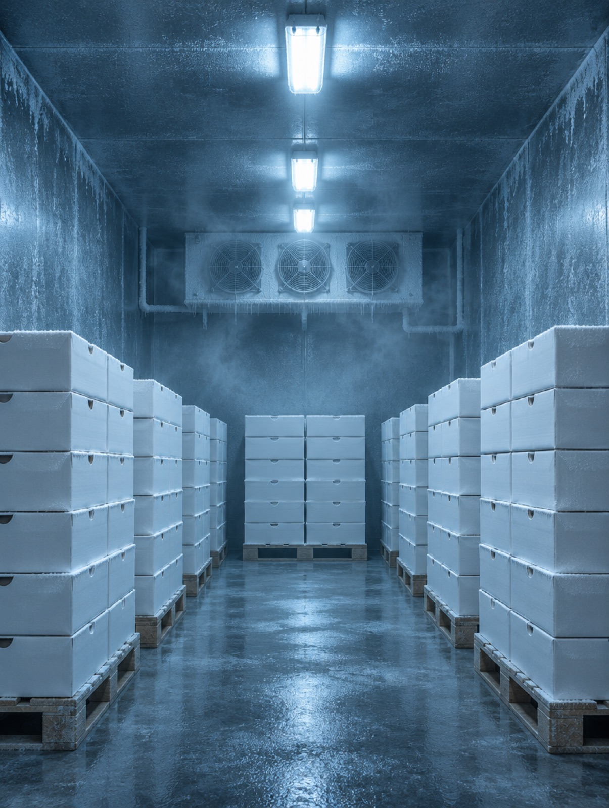
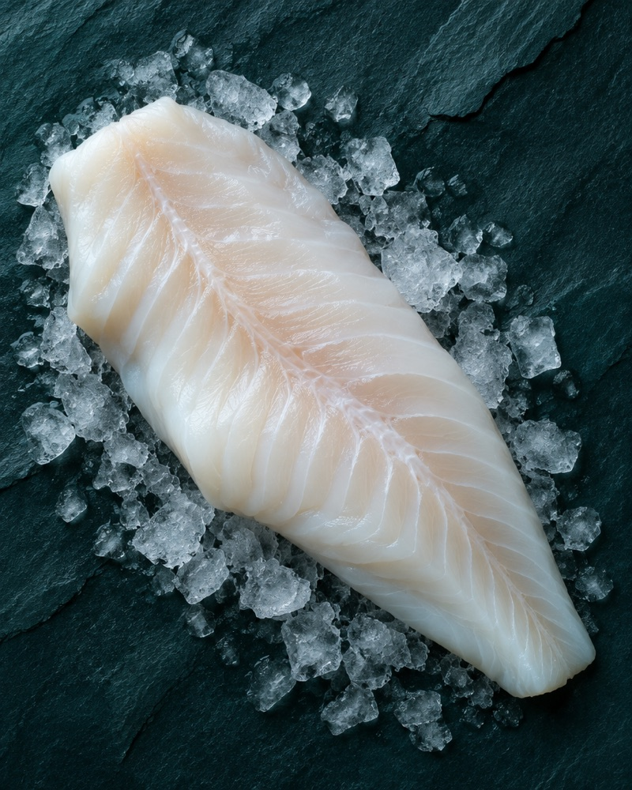
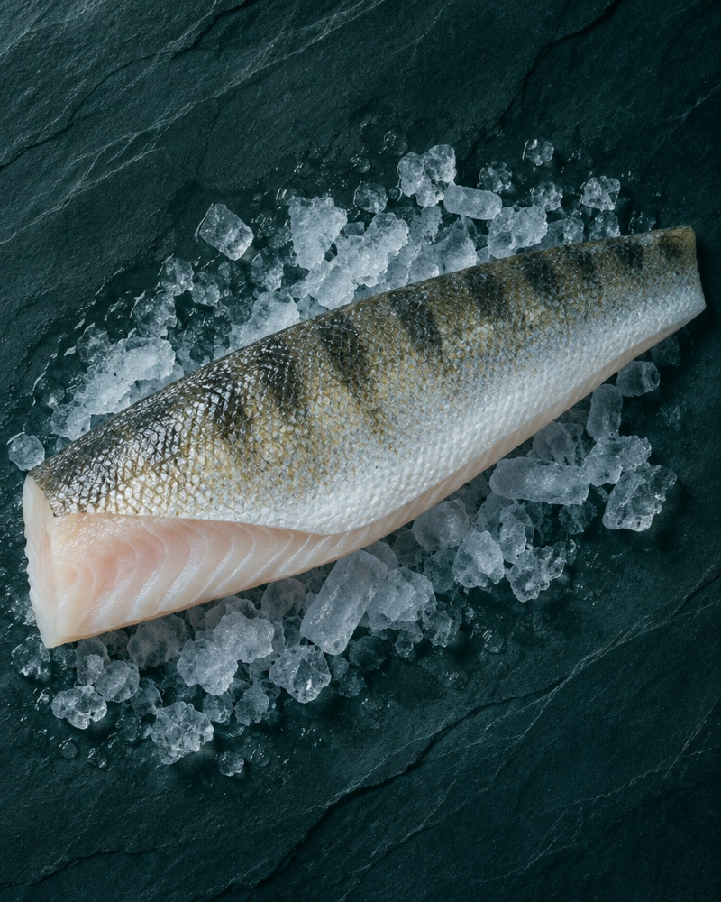
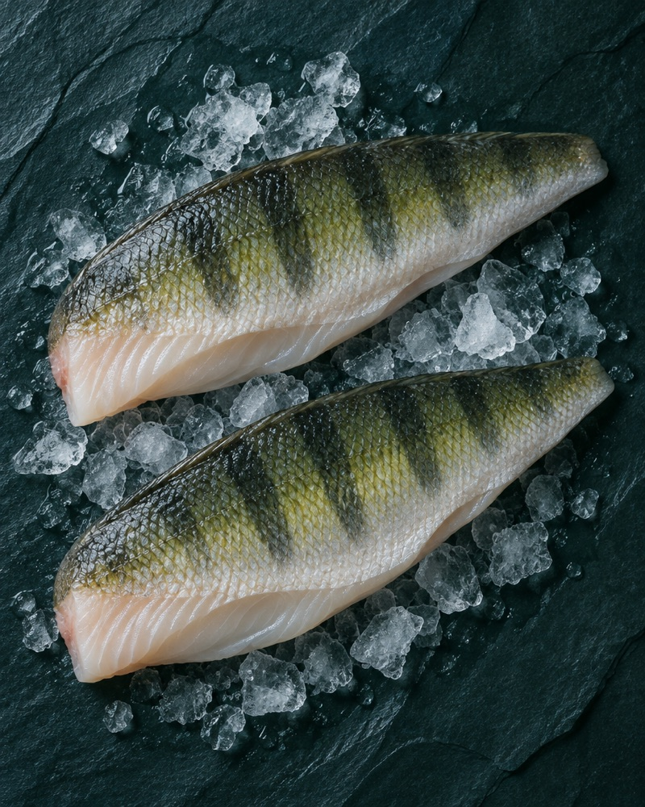
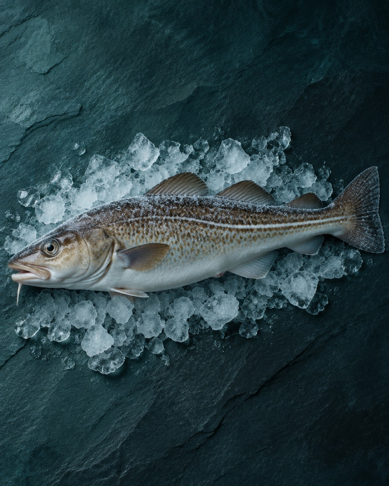
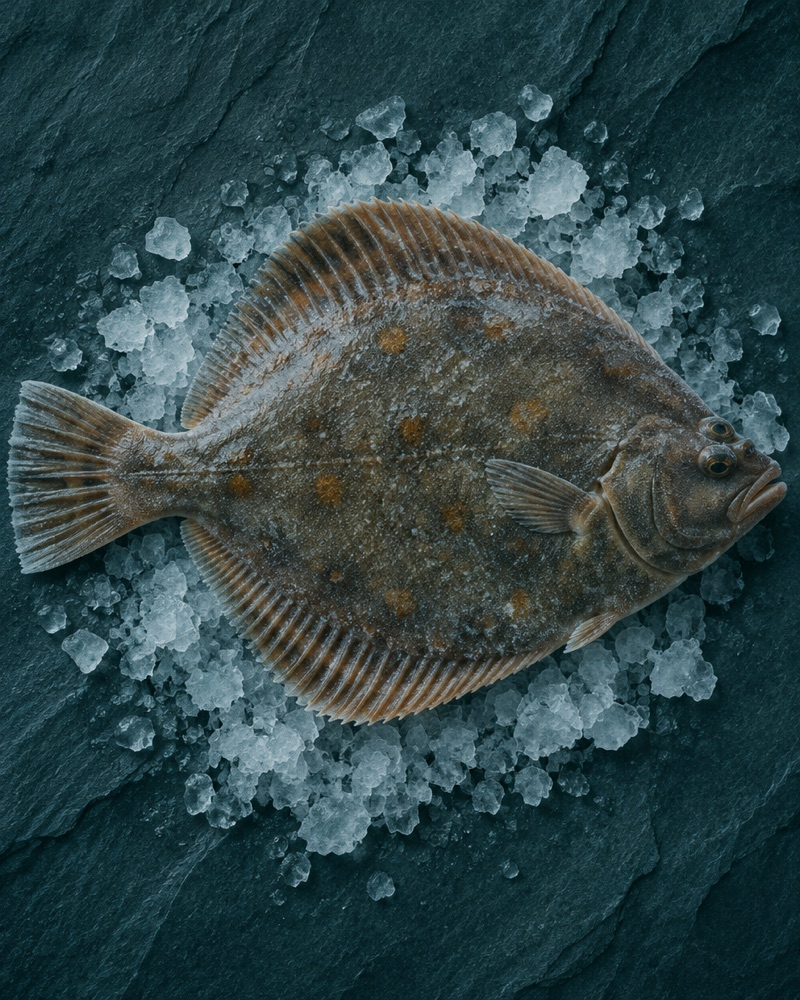
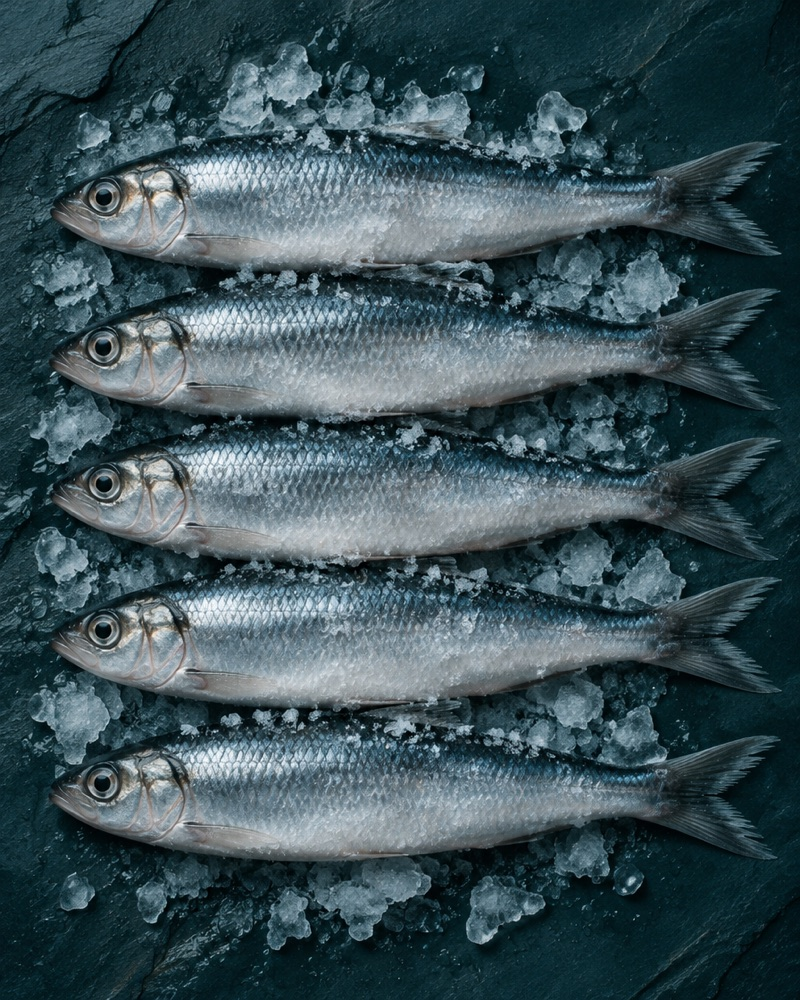
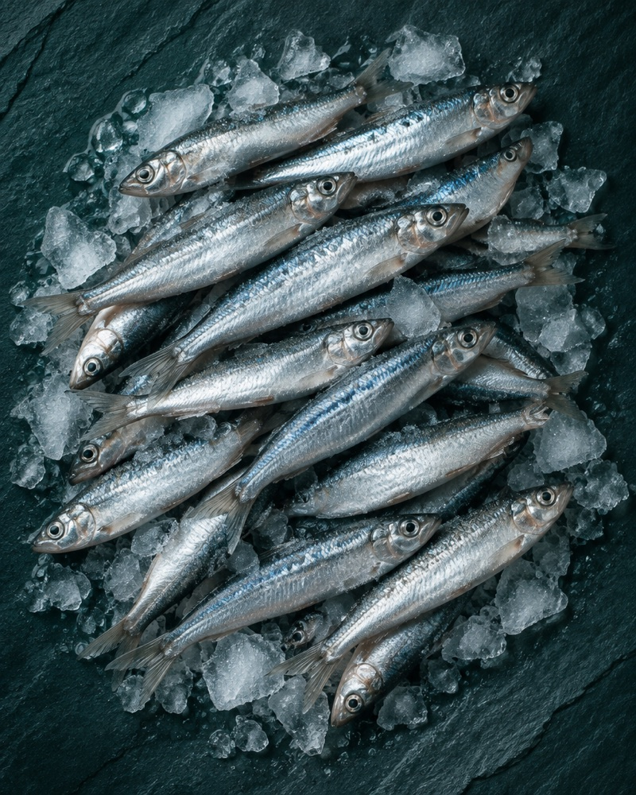
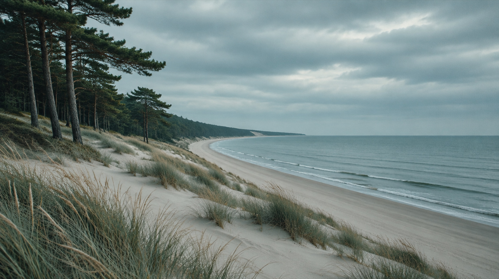

Улов
Промышленное рыболовство в Балтийском море и заливах: треска, камбала, салака, килька.
Калининградская областьС 2005 года
Ловим, разделываем и консервируем рыбу Балтийского моря. Поставляем филе в Германию, Данию, Францию и другие страны Евросоюза.
(01) Компания
Двадцать лет мы работаем с одним морем. Сырьё приходит с Балтики и из её заливов, поэтому наша продукция в основном охлаждённая и первой заморозки.
Балтийское море · каждый день с 2005 года
(02) Производство
Весь путь в одних руках: Светловский городской округ, посёлок Волочаевское.
→Промышленное рыболовство в Балтийском море и заливах: треска, камбала, салака, килька.
Филе трески, судака и окуня на современном оборудовании. По заказу делаем филе из мороженого сырья.

Собственные холодильники для сырья и готовой продукции. Свежесть сохраняется от причала до клиента.
Свой консервный цех: шпроты в масле, килька в томатном соусе и печень трески в стекле и жести.
(03) Консервы
(04) Рыба и филе

↗
↗
↗
↗
↗
↗
↗
54°40′ N · 20°08′ E
Сырьё приходит из Балтийского моря и его заливов, поэтому продукция в основном охлаждённая и первой заморозки.
(05) Экспорт
Еврономер 68N и система HACCP открывают нам рынок Евросоюза. Филе уходит в Германию, Данию, Францию и другие страны ЕС, а также по всей России.
(06) Контакты
Калининградская область,
Светловский ГО, пос. Волочаевское
238340, Калининградская обл., г. Светлый, пос. Волочаевское, ул. Центральная, 34, пом. II из «Д»